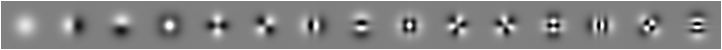

Covariance
The Covariance program is the main computation routine used
when computing the Principle Components of a dataset of
images. For information on how to generate a dataset of
images, please see our Distributed
Downloader Example. If you are new to HIPI, you should
also work through the DumpHIB
example before proceeding.
Introduction
This example will run through a non-trivial application based on
"The
Principal Components of Natural Images" by Hancock et
al. Using HIPI, we run the same experiment described in the
paper on a massive data set (as opposed to 15 images in the
original paper) and compare our results for the first 15
principal components of randomly sampled images. To do this, we
calculate the covariance matrix for 100 random samples from each
image, then perform Singluar Value Decomposition (SVD) on the
covariance matrix to recover the principal components. Recall
that the covariance of a set of points xi is calculated according to the
following formula:
 In our case, each xi is a
randomly sampled patch of pixels from our image set, and x̄ is the mean of the random
samples. Notice the sum of products can be rewritten using
matrix notation where x̂ are the
mean-centered patches (xi -
x̄).Computing this quantity can be formulated in a
parallel context by noting that the covariance matrix is
decomposable into the sum of products of smaller matrices:
In our case, each xi is a
randomly sampled patch of pixels from our image set, and x̄ is the mean of the random
samples. Notice the sum of products can be rewritten using
matrix notation where x̂ are the
mean-centered patches (xi -
x̄).Computing this quantity can be formulated in a
parallel context by noting that the covariance matrix is
decomposable into the sum of products of smaller matrices:
 Thus, each of the matrix products can be computed independently
in a Mapper's task and then summed together in a single
Reducer. Note that in order to compute the covariance matrix in
this case, the mean must be known a priori. This is not strictly
true in general as the mean can be computed inline with the
covariance matrix, however we choose to compute it in a separate
program to illustrate the use of the DistributedCache.
Thus, each of the matrix products can be computed independently
in a Mapper's task and then summed together in a single
Reducer. Note that in order to compute the covariance matrix in
this case, the mean must be known a priori. This is not strictly
true in general as the mean can be computed inline with the
covariance matrix, however we choose to compute it in a separate
program to illustrate the use of the DistributedCache.
Once the covariance matrix is computed, a simple MATLAB routine is used to compute the first 15 eigenvectors using the SVD algorithm. Here is a comparison of the output of our algorithm running on HIPI and drawing 100 randomly sampled patches from a set of 100,000 images compared to the seminal result of Hancock et al. using only 15 images:
As expected, the principle components do not perfectly
correlate due mostly to rotations (SVD is rotationally
invariant) and the ambiguity in displaying negative v. positive
values.
The general flow of the application is as follows
In our case, each xi is a
randomly sampled patch of pixels from our image set, and x̄ is the mean of the random
samples. Notice the sum of products can be rewritten using
matrix notation where x̂ are the
mean-centered patches (xi -
x̄).Computing this quantity can be formulated in a
parallel context by noting that the covariance matrix is
decomposable into the sum of products of smaller matrices:
Thus, each of the matrix products can be computed independently
in a Mapper's task and then summed together in a single
Reducer. Note that in order to compute the covariance matrix in
this case, the mean must be known a priori. This is not strictly
true in general as the mean can be computed inline with the
covariance matrix, however we choose to compute it in a separate
program to illustrate the use of the DistributedCache.Once the covariance matrix is computed, a simple MATLAB routine is used to compute the first 15 eigenvectors using the SVD algorithm. Here is a comparison of the output of our algorithm running on HIPI and drawing 100 randomly sampled patches from a set of 100,000 images compared to the seminal result of Hancock et al. using only 15 images:
 |
 |
| Hancock et al. - First 15 Principle Components (20,000 patches) | HIPI - First 15 Principle Components (10,000,000 patches) |
- Determine location of random sample patches
- Calculate mean of sample patches
-
Compute the contribution of a particular patch x_i to the
Covariance Matrix:

- Sum the contribution of each random sample to get the Covariance Matrix
- Perform SVD on the Covariance Matrix to acquire first 15 principal components (done in Matlab)
Compiling the Example
Before you can compile this (or any other example) you must configure the compiling script so that it knows where your Hadoop installation resides. Open up the build.xml file in the root directory of your HIPI installation. At the top of the file are two important properties that are left blank named hadoop.home and hadoop.version. Fill in the value attributes of these two properties with the location of your Hadoop installation and your Hadoop version. For instance, if you downloaded Hadoop 0.20.1 and unpacked it to /hadoop/hadoop-0.20.1, then you would have the following build.xml file:
<project basedir="." default="all">
<target name="setup">
<property name="hadoop.home" value="/hadoop/hadoop-0.20.1" />
<property name="hadoop.version" value="0.20.1" />
<property name="hadoop.classpath" value="${hadoop.home}/hadoop-${hadoop.version}-core.jar" />
<property name="metadata.jar" value="3rdparty/metadata-extractor-2.3.1.jar" />
</target>
...
You can compile this example by executing the following
command in the root directory where you unpacked HIPI:
$> ant dumphib
Important Note:
You must be using
Java JDK version 1.6 in order to ensure that HIPI will compile
correctly. Although ealrier versions may work, we
have not fully tested them.
Running the Example
We have provided a script in the examples directory of the HIPI installation that will automatically compile the dumphib program, upload the resulting jar to the Hadoop Distributed Filesystem (HDFS), and run the dumphib job. This script (and all of the example scripts) relies on the environment variable HDFS_HOME being set to the HDFS path where you will upload your compiled jar files. In most cases this can simply be set in your .bashrc (or equivalent) as:export HDFS_HOME=/The dumphib program takes two command line parameters, which you can specify directly to the runDumpHIB.sh script. For example:
$> ./runDumpHIB.sh /hdfs/path/to/input.hib /hdfs/path/to/outputRunning this script will iterate through the HipiImageBundle (HIB) located at /hdfs/path/to/input.hib on the HDFS. The output for this job will be contained in the directory /hdfs/path/to/output, also on the HDFS, and will contain information about all of the images in the HIB.